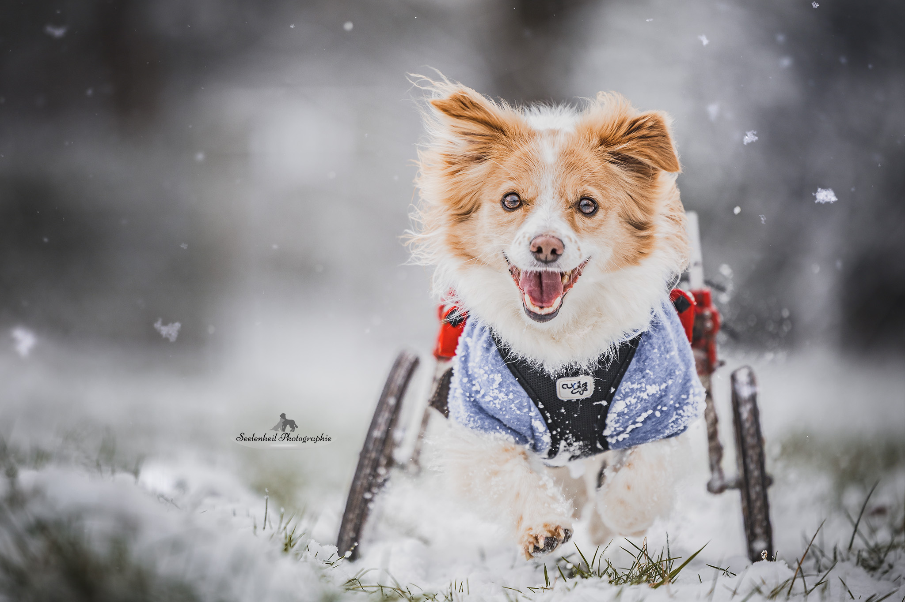
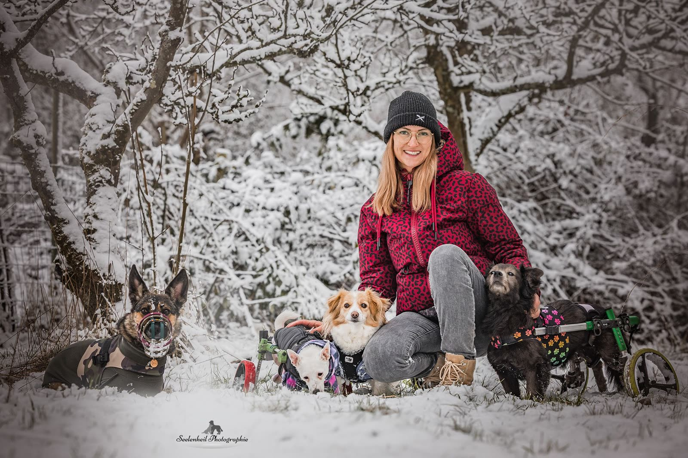
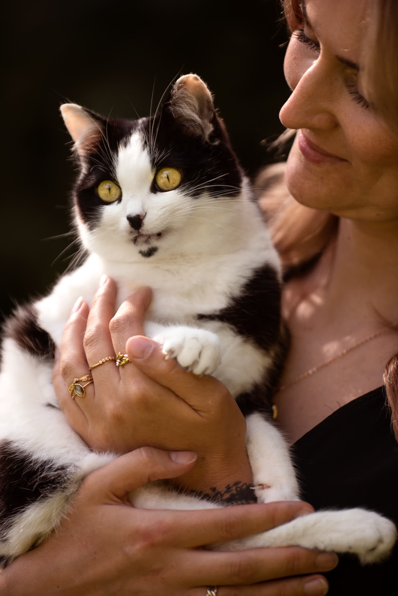
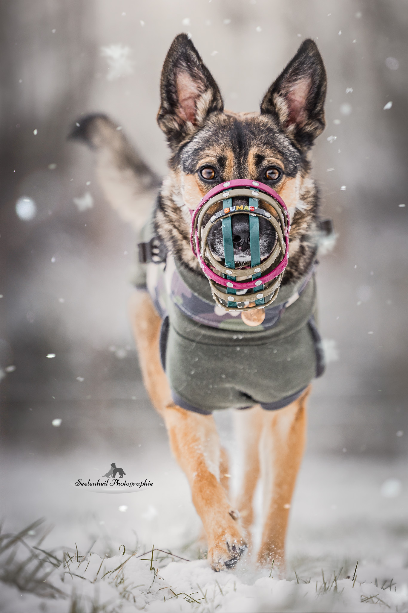

Njuvra
Geboren am 14. Februar 2015, seit Oktober 2015 bei mir und damit der älteste Bewohner des Hofes. Ein Unfall als Kitten hinterließ ein verdrehtes Hinterbein. Njuvra stammt aus Kroatien.
Patenschaft für Njuvra →
Ich bin Lara. Auf dem Sonnenhof leben Hunde und Katzen mit schwerer Behinderung, dazu ein paar gerettete Kaninchen. Hier zieht niemand mehr weiter. Sie gehören zur Familie.
Katzenstimme grenzenlos e. V. · im Tierschutz seit 2015 · im SR-Fernsehen und bei der ZEIT
Dort erzähle ich regelmäßig, wie es den Tieren geht: kleine Fortschritte, Tierarzttermine, neue Rollis und ganz gewöhnliche Hofmomente. Über 30.000 Menschen begleiten uns dort schon.
Diese Seite erzählt die Geschichte dahinter. Den Alltag erlebst du auf Instagram.
Zu Instagram: @sonnenhof_der_koboldtiereAuch der Verein ist dort: @katzenstimme_grenzenlos
Einige Tiere haben dort eine eigene Sammlung mit ihrer Geschichte.

Die ZEIT · dpa · 16. August 2025 „Lebenshof“ – neues Zuhause für kriegsverletzte Tiere Viele meiner Tiere kommen aus Kriegsgebieten wie der Ukraine. Andere wurden in Bulgarien oder Kroatien ausgesetzt oder mit Behinderung geboren. Die Deutsche Presse-Agentur hat den Sonnenhof besucht, ihre Meldung erschien unter anderem bei der ZEIT. „Das hier ist ein Lebenshof. Eine Auffangstation.“Lara Sohn gegenüber der dpa Den Bericht bei der ZEIT lesen →Presseanfragen und Bildmaterial: katzenstimme_grenzenlos@gmx.de
Im Oktober 2015 sind mir im Urlaub in Südkroatien die vielen kranken Straßenkatzen aufgefallen. Es gab dort weder ein Tierheim noch eine andere Tierschutzeinrichtung. Also habe ich selbst angefangen zu helfen.
Njuvra, geboren am 14. Februar 2015, kam im Oktober desselben Jahres aus Kroatien zu mir. Nach einem Unfall als Kitten blieb sein Hinterbein verdreht. Heute ist er der älteste Bewohner des Hofes. 2017 kam Murron dazu, meine erste querschnittsgelähmte Katze. Sie wurde als Kitten auf einer Mülldeponie gefunden. Heute ist sie die Oberbossin des Vereins.
Mit dem Verein Katzenstimme grenzenlos e. V. kümmere ich mich seit 2017 auch um die Straßenkatzen auf dem Universitätsgelände in Saarbrücken. Über dreißig Katzen haben wir dort kastriert, gesund gepflegt und geimpft. Sie leben heute in einem sicheren Zuhause. Jedes Jahr fahren wir außerdem nach Südkroatien, um Katzen an den Futterstellen für Kastrationen zu sichern. Und immer wieder brauchen auch Notfallhunde unsere Hilfe.
Weil nie alle Tiere gerettet werden können, mussten wir Prioritäten setzen. Über die Jahre haben wir uns deshalb auf Tiere mit Behinderung spezialisiert: Katzen, die blind sind, nur ein Auge oder nur drei Beine haben. Und Tiere, die eingeschläfert werden sollten, weil ihre Pflege „zu viel Arbeit“ macht. Als meine Arbeit bekannt wurde, hat man mich genau in solchen Fällen um Hilfe gebeten.
Der Gedanke an einen Lebenshof entstand mit Murron, die ich am 13. Juli 2017 adoptiert habe. Daraus ist über die Jahre der Sonnenhof der Koboldtiere gewachsen. Hier leben Hunde und Katzen in Rollis und Rutschsäcken, Tiere mit anderen Einschränkungen und gerettete Kaninchen als Familie zusammen. Im August 2024 haben wir in Heusweiler ein behindertengerechtes Wohnhaus mit knapp 2.000 m² eingezäuntem Grundstück gefunden. Aus einer Pflegestelle ist endlich ein Zuhause geworden. Einen Lebenshof zu gründen war ein großer Traum. Wenn man seine Berufung leben kann, ist es ein Geschenk.
„Die Tiere leben hier im Familienverbund, integriert wie in einem normalen Zuhause.“ Lara Sohn

Hinter jedem Rolli, jedem Rutschsack und jedem besonderen Handgriff steht ein Tier mit eigenem Charakter und einem festen Platz in meinem Leben.
Aktuell leben bei mir 10 Katzen mit starker Behinderung, 5 Rollihunde, ein Herdenschutzhund und 7 Kaninchen. Auf Instagram zeige ich den Alltag regelmäßig.
Außerdem leben in unserem Vereinsteam weitere Tiere, die nach ihrem Unfall auf der Straße ohne Hilfe nicht mehr am Leben wären, etwa die Windelkatzen Lussi aus der Ukraine und Dragi sowie die querschnittsgelähmte Soula aus Kroatien. Wir nehmen auch chronisch kranke Tiere auf, die nicht mehr vermittelbar sind, aber einen schönen Lebensabend nach einem harten Leben verdient haben.
Geboren am 14. Februar 2015, seit Oktober 2015 bei mir und damit der älteste Bewohner des Hofes. Ein Unfall als Kitten hinterließ ein verdrehtes Hinterbein. Njuvra stammt aus Kroatien.
Patenschaft für Njuvra →
Geboren am 13. Juni 2017, seit Juli 2017 bei mir. Murron war meine erste querschnittsgelähmte Katze und wurde als Kitten auf einer Mülldeponie gefunden. Heute ist sie die Oberbossin des Vereins und liebt Abenteuer mit ihrem Hunderudel und Urlaube.
Patenschaft für Murron →
Geboren im Oktober 2020. Little Bee wurde als Kitten querschnittsgelähmt ausgesetzt. Bei uns bekommt sie die Pflege und Sicherheit, die ihr Alltag verlangt.
Patenschaft für Little Bee →Pavel ist ein schwarz-weißer Kater und gehört zu meiner Katzenrunde.
Patenschaft für Pavel →Hunter ist ein kleiner schwarzer Russischer Toy Terrier und gehört zu meinem Hunderudel.
Patenschaft für Hunter →Hier stehen nicht alle. Auf Instagram lernst du die ganze Hofgemeinschaft kennen. Schreib mir einfach, wen du begleiten möchtest. Mit einer Lebenshofpatenschaft hilfst du allen Tieren zugleich.
Lebenshofpatenschaft übernehmen →Mein Alltag besteht aus vielen kleinen Handgriffen. Und aus all den Dingen, die ein Zuhause ausmachen.
Viele meiner Tiere brauchen Hilfe bei Blase und Darm, Windeln, Hautpflege, Medikamente oder einen besonders sorgfältigen Tagesrhythmus. Blase und Darm entleere ich bei den gelähmten Tieren selbst von Hand. Morgens dauert das für alle zusammen etwa anderthalb bis zwei Stunden.
Rollis, Rutschsäcke, gemeinsame Gartenzeit und Gassi machen Bewegung im eigenen Tempo möglich. Als zertifizierte Tierphysiotherapeutin begleite ich meine Tiere selbst, damit sie so beweglich bleiben, wie es für sie geht.
Spielen, schlafen, kuscheln, Nähe genießen und Teil der Familie sein: Das gehört bei uns genauso dazu wie die Versorgung.
So viel wendet der Verein für alle Tiere zusammen auf, das sind rund 330 Euro an jedem einzelnen Tag. Was über Patenschaften fest zugesagt ist, kann ich einplanen. Alles andere muss ich jeden Monat neu zusammenbekommen.
Patinnen und Paten begleiten einzelne Tiere oder den ganzen Hof. Spenden finanzieren Pflege und medizinische Versorgung. Ehrenamtliche Helferinnen und Helfer unterstützen praktisch.
Mein Verein Katzenstimme grenzenlos e. V. trägt den Sonnenhof der Koboldtiere. Jede Spende und jede Patenschaft geht an den Verein.
Du entscheidest, ob deine Patenschaft dem ganzen Hof gilt oder einem bestimmten Tier, und bestimmst den Betrag selbst, ab 5 Euro im Monat. Anpassen oder beenden kannst du sie jederzeit.
Für ein bestimmtes Tier:
Auf unserer Amazon-Wunschliste steht, was die Tiere gerade brauchen. Du suchst etwas aus, bezahlst es bei Amazon, und es wird direkt an uns geliefert.
Du hast Zeit, Erfahrung oder Sachspenden, die du mitbringen möchtest? Schreib mir vorher, dann schauen wir, was gerade passt.
Sachspenden bitte nicht ohne Rücksprache am Hof abstellen.
katzenstimme_grenzenlos@gmx.de
Du entscheidest, ob sie einem bestimmten Tier gilt oder allen auf dem Hof. Ab 5 Euro im Monat trägst du Futter, Tierarzt und Pflege mit, Monat für Monat.

In Heusweiler im Saarland. Getragen wird der Hof vom Verein Katzenstimme grenzenlos e. V., Matzenbergstraße 28, 66265 Heusweiler. Besuche und Sachspenden bitte nur nach Absprache.
Aktuell 10 Katzen mit starker Behinderung, 5 Rollihunde, ein Herdenschutzhund und 7 Kaninchen. Viele von ihnen sind querschnittsgelähmt und bewegen sich mit Rolli oder Rutschsack.
Ich, Lara Sohn. Ich bin Vorsitzende von Katzenstimme grenzenlos e. V. und zertifizierte Tierphysiotherapeutin. Meine Tierschutzarbeit begann im Oktober 2015, den Lebenshof in seinem heutigen Haus gibt es seit August 2024.
Für Futter und Tierarzt aller Tiere wendet der Verein jeden Monat 10.000 Euro auf.
Mit dem Patenschaftsantrag auf dieser Seite oder per E-Mail an katzenstimme_grenzenlos@gmx.de. Eine Patenschaft gibt es für den ganzen Hof oder für ein bestimmtes Tier, ab 5 Euro im Monat. Den Betrag kannst du jederzeit anpassen.
Bitte stell Sachspenden nicht ohne Rücksprache am Hof ab. Melde dich vorher kurz per E-Mail oder schenk etwas von der Amazon-Wunschliste, dort steht, was gerade gebraucht wird.
Dort erzähle ich, wie es Murron, Njuvra und den anderen gerade geht. Folg uns, dann bist du dabei, wenn sich auf dem Hof etwas tut.